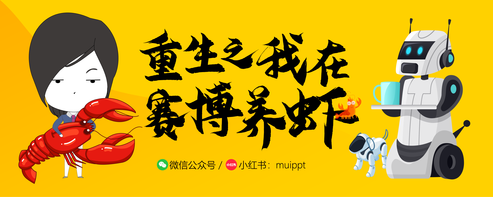

AI-powered PPT creation — designs presentations from scratch like a professional designer, so you don't need to be one.
Get Started🎨 15 Design Philosophies · 📊 119 Chart Types · 🏛️ 40 Consulting Templates · 🖼️ 6,732 Icons
AI recommends the best visual style — Pentagram, Fathom, Ive, Rams, Zaha, Vignelli and more. Not picking templates, but designing with intent.
From bar charts to Sankey diagrams, from architecture diagrams to UML — every visualization you need, built in.
McKinsey / BCG / Bain level: SWOT, Porter's Five Forces, KPI Dashboard, Gantt Timeline, Org Chart, and more.
All processing on your machine. No cloud, no subscription, no telemetry. MIT licensed, truly open source.
PDF, DOCX, Markdown, HTML, EPUB → PPT. Intelligent content splitting with auto layout matching.
# Step 1: Install
pip install -r requirements.txt
# Step 2: (Optional) AI Image Generation
export OPENAI_API_KEY=sk-xxx
# Step 3: Tell your AI agent
"Help me make a PPT"